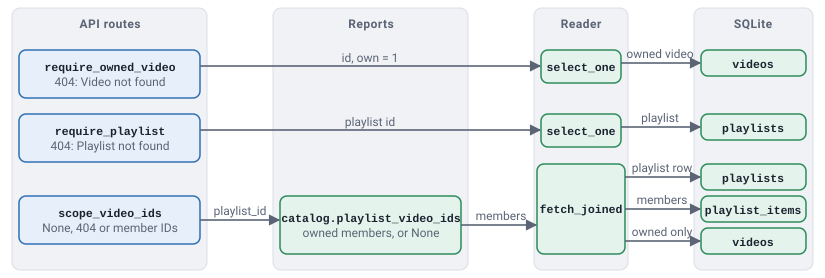
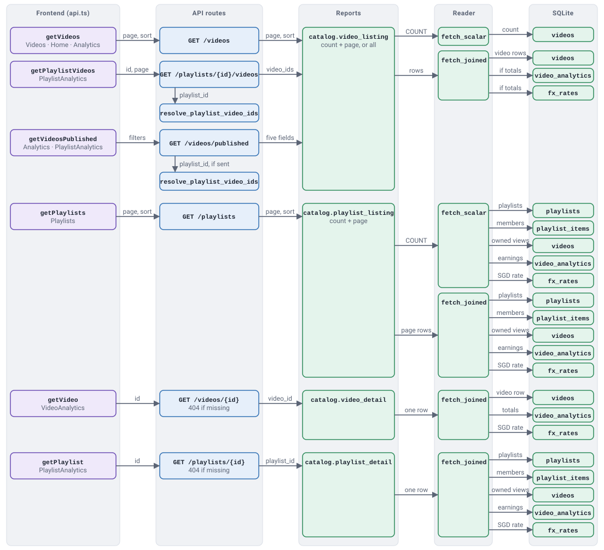
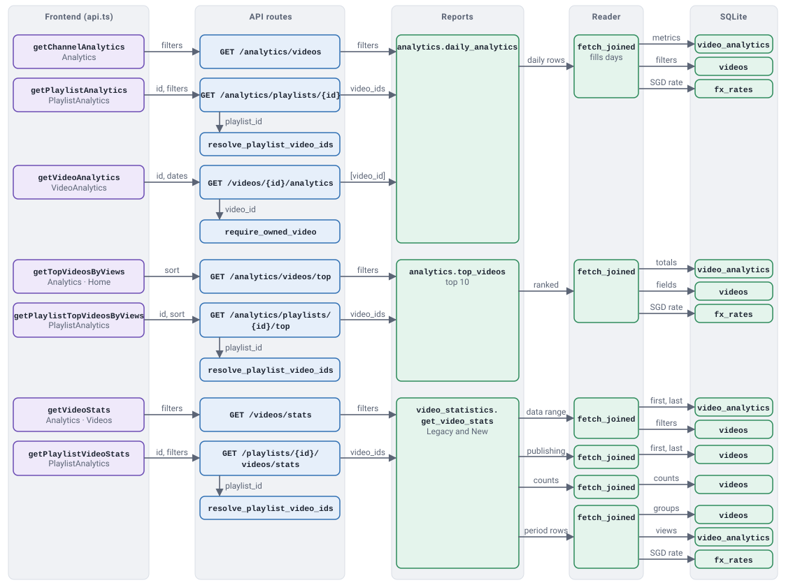
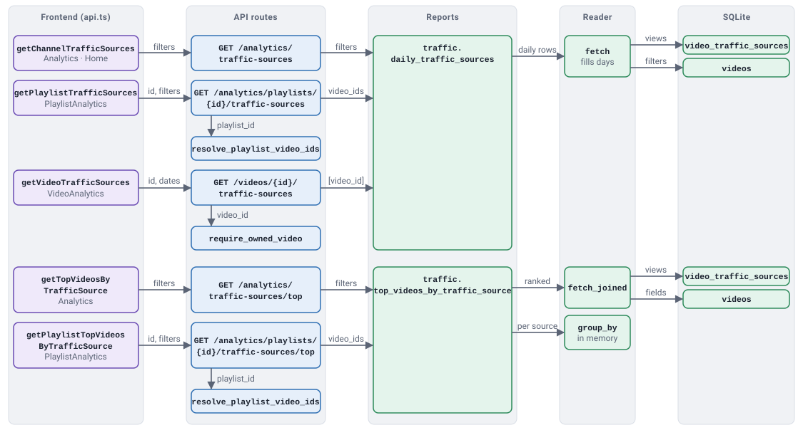
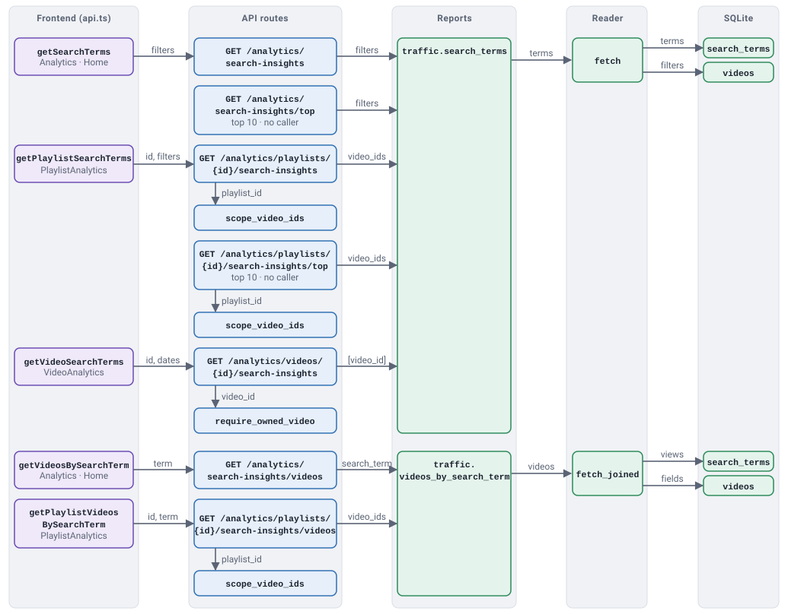
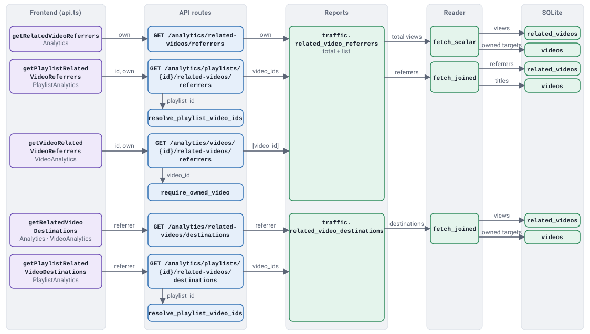
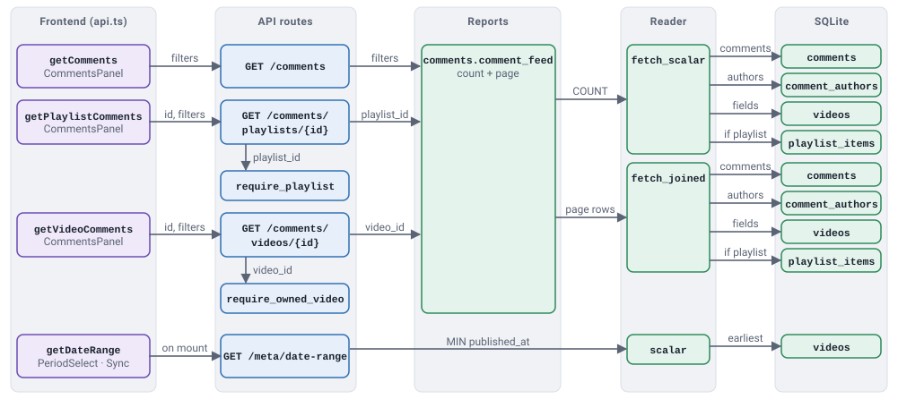
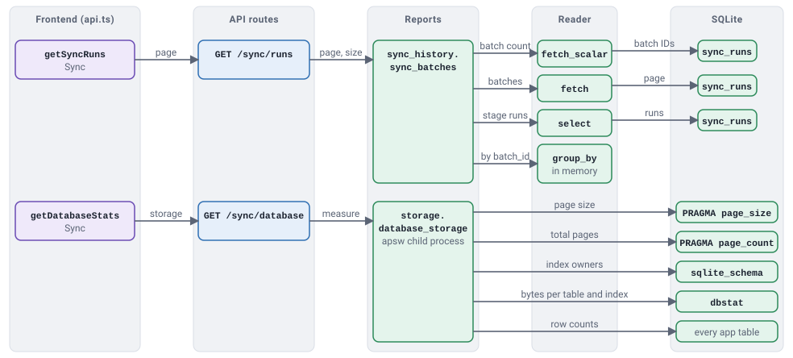
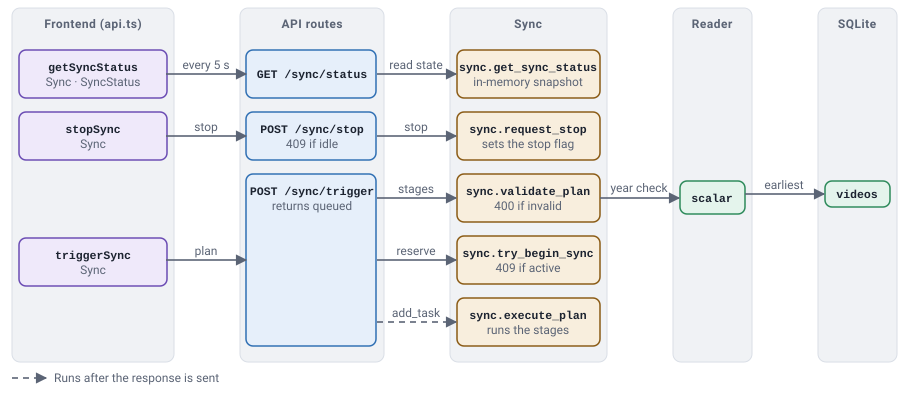
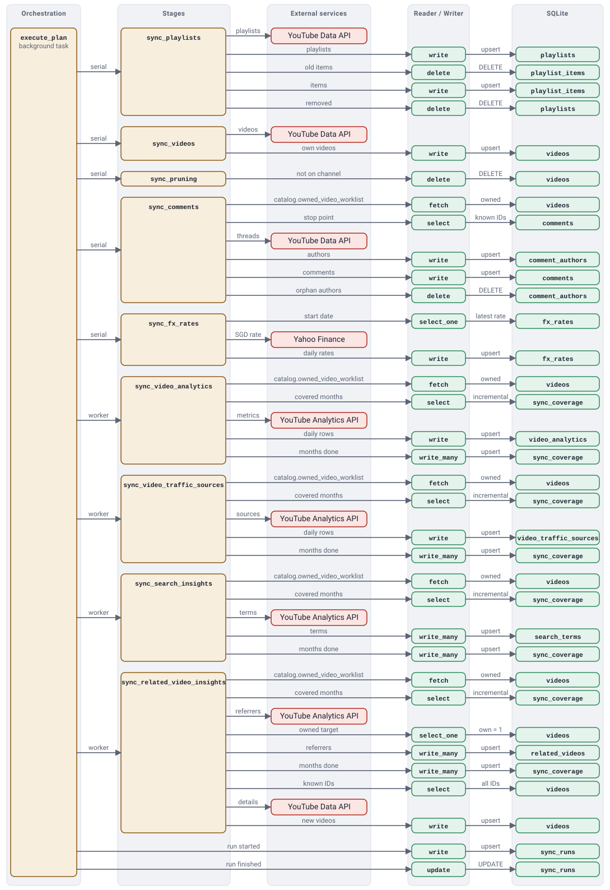

Backend reference
This page shows what each backend file does and which functions each API route calls.
Files
Top level
Starts the app and sets up logging.
server.py- Creates the app and prepares the database on startup.
logging_config.py- Sets up the application and sync log files.
routes/
The web API the frontend calls.
videos.py- Serves the Videos page, single-video data, and the video list and statistics for the channel or a playlist.
playlists.py- Serves the Playlists page and single-playlist data.
analytics.py- Serves the Analytics pages: charts, top videos, traffic sources, search terms, and related videos.
comments.py- Serves the comment feeds for the channel, a video, or a playlist.
synchronization.py- Starts and stops syncs, reports progress, and returns sync history.
metadata.py- Returns the earliest publish year for the year dropdowns.
video_scope.py- Returns 404 for a missing video or playlist, and loads a playlist's video IDs. Defines no endpoints.
_shared.py- Turns a missing lookup result into a 404 "not found" response. Defines no endpoints.
database/
Everything that touches SQLite.
dataclasses/- One data class per table, such as
VideoorComment. They only hold values. tables.py- Maps each class to its table and key columns.
filters.py- Turns a list of conditions into a SQL
WHERE. reader.py- Runs every read and returns data classes.
writer.py- Runs every insert, update and delete.
reports/- Runs the joined, grouped, ranked and paged reads and returns finished results. One file per purpose:
analytics.py,traffic.py,catalog.py,comments.py,video_statistics.py(the Legacy/New stats bar) andsync_history.py. connection.py- Opens database connections and creates the tables.
sync/
Downloads data from YouTube and stores it.
orchestration.py- Runs a sync plan stage by stage and records each stage's result.
stages.py- Contains the code for each of the nine stages.
plans.py- Checks that a requested plan is valid and sets the order stages run in.
status.py- Tracks live progress and handles stop requests.
coverage.py- Works out which months still need downloading.
write_preparation.py- Turns a month of search terms or referrers into data classes.
monthly_insights.py- Splits date ranges into calendar months.
scheduler.py- Is an unused daily-sync helper; nothing calls it.
youtube/
Talks to Google. Only sync/ uses it.
data_api.py- Fetches channel info, videos, playlists, and comments from the YouTube Data API.
analytics_api.py- Fetches daily metrics, traffic sources, search terms, and related videos from the YouTube Analytics API.
auth.py- Handles the Google sign-in and keeps the token fresh.
Schema and scripts
schema.sql- Defines the database tables.
scripts/issue-48-migration.py- Adds the
videos.owncolumn to an older database. scripts/issue-62-migration.py- Fills in sync coverage for an older database.
Route functions
What each read returns and which endpoints use it. Names such as catalog.video_listing are report functions in database/reports/; each runs its SQL through the reader and returns the finished result.
Videos
Handled in routes/videos.py and routes/metadata.py.
- Read
- Returns
- Used by
catalog.video_listing- Videos as the chosen fields, by default every column plus lifetime earnings and watch hours, one page at a time or all at once.
GET /videos(one page)GET /playlists/{id}/videos(the playlist's video IDs, one page)GET /videos/published(five fields, all matches, oldest first)catalog.video_detail- One video with its lifetime earnings and watch hours.
GET /videos/{id}video_statistics.get_video_stats- The stats bar numbers: legacy and new video counts, views and earnings, plus comment and privacy totals.
GET /videos/statsGET /playlists/{id}/videos/stats(the playlist's video IDs)require_owned_video- Returns 404 unless the video is one of this channel's.
- 404 check:
GET /videos/{id}/analytics,/videos/{id}/traffic-sources,/analytics/videos/{id}/search-insights,/analytics/videos/{id}/related-videos/referrers,/comments/videos/{id} reader.scalar(Video, "MIN", "published_at")- The earliest publish year, for the year dropdowns.
GET /meta/date-range
Playlists
Handled in routes/playlists.py, routes/videos.py and routes/video_scope.py.
- Read
- Returns
- Used by
catalog.playlist_listing- One page of playlists with their total views and earnings.
GET /playlistscatalog.playlist_detail- One playlist with its total views and earnings.
GET /playlists/{id}require_playlist- Returns 404 if the playlist doesn't exist.
- 404 check:
/comments/playlists/{id},/videos/publishedwith a playlist ID, and every playlist endpoint that usesscope_video_ids catalog.playlist_video_ids- The IDs of the channel's videos in a playlist.
GET /playlists/{id}/videos/statsGET /playlists/{id}/videos
everyGET /analytics/playlists/{id}…endpointGET /videos/publishedwith a playlist ID
Daily analytics
Defined in database/reports/analytics.py.
- Read
- Returns
- Used by
analytics.daily_analytics- Daily metrics summed across the chosen videos, one row per day for videos and for Shorts, with missing days filled. For one video, only its own type is filled.
GET /analytics/videosGET /analytics/playlists/{id}(the playlist's video IDs)GET /videos/{id}/analytics(that one video)analytics.top_videos- The top videos for the date range by views or watch time.
GET /analytics/videos/top(top 10)GET /analytics/playlists/{id}/top(top 10)
Traffic sources
Defined in database/reports/traffic.py.
- Read
- Returns
- Used by
traffic.daily_traffic_sources- Daily views per traffic source, summed across the chosen videos, with missing days filled.
GET /analytics/traffic-sourcesGET /analytics/playlists/{id}/traffic-sources(the playlist's video IDs)GET /videos/{id}/traffic-sources(that one video)traffic.top_videos_by_traffic_source- The top 10 videos by views for each traffic source.
GET /analytics/traffic-sources/top(10 per source)GET /analytics/playlists/{id}/traffic-sources/top(10 per source)
Search terms
Defined in database/reports/traffic.py. Dates are widened to whole months.
- Read
- Returns
- Used by
traffic.search_terms- Search terms that brought viewers, with views per term.
GET /analytics/search-insightsGET /analytics/search-insights/top(first 10)GET /analytics/playlists/{id}/search-insightsGET /analytics/playlists/{id}/search-insights/top(first 10)GET /analytics/videos/{id}/search-insightstraffic.videos_by_search_term- The videos viewers found through one search term.
GET /analytics/search-insights/videosGET /analytics/playlists/{id}/search-insights/videos
Related videos
Defined in database/reports/traffic.py. Dates are widened to whole months.
- Read
- Returns
- Used by
traffic.related_video_referrers- The videos that sent viewers here through Related Videos, plus the total named views.
GET /analytics/related-videos/referrersGET /analytics/playlists/{id}/related-videos/referrersGET /analytics/videos/{id}/related-videos/referrerstraffic.related_video_destinations- The channel's videos one referring video sent viewers to.
GET /analytics/related-videos/destinationsGET /analytics/playlists/{id}/related-videos/destinations
Comments
Defined in database/reports/comments.py.
- Read
- Returns
- Used by
comments.comment_feed- One page of comments with their author and video.
GET /commentsGET /comments/videos/{id}GET /comments/playlists/{id}
Sync
Defined in database/reports/sync_history.py and sync/status.py.
- Read
- Returns
- Used by
sync_history.sync_batches- One page of past syncs, each with its stages and overall status.
GET /sync/runssync.get_sync_status- The live sync state, read from memory.
GET /sync/status
Call chains
Scope checks routes/video_scope.py

Video and playlist catalog routes/videos.py, routes/playlists.py

Analytics and video statistics routes/analytics.py, routes/videos.py

Traffic sources routes/analytics.py, routes/videos.py

Search terms routes/analytics.py

Related videos routes/analytics.py

Comments and date range routes/comments.py, routes/metadata.py

Sync history routes/synchronization.py

Sync control routes/synchronization.py

Sync execution sync/orchestration.py, sync/stages.py
